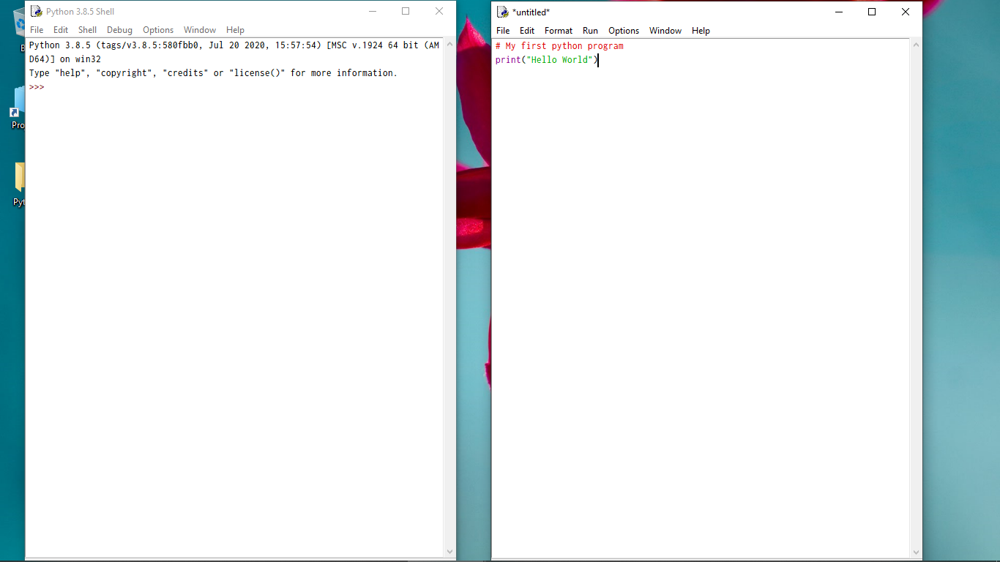
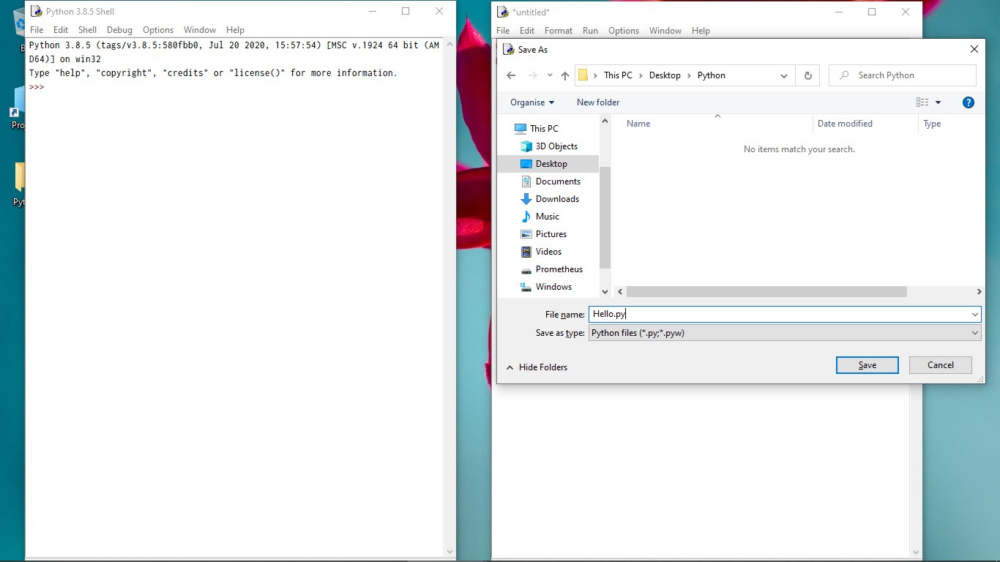
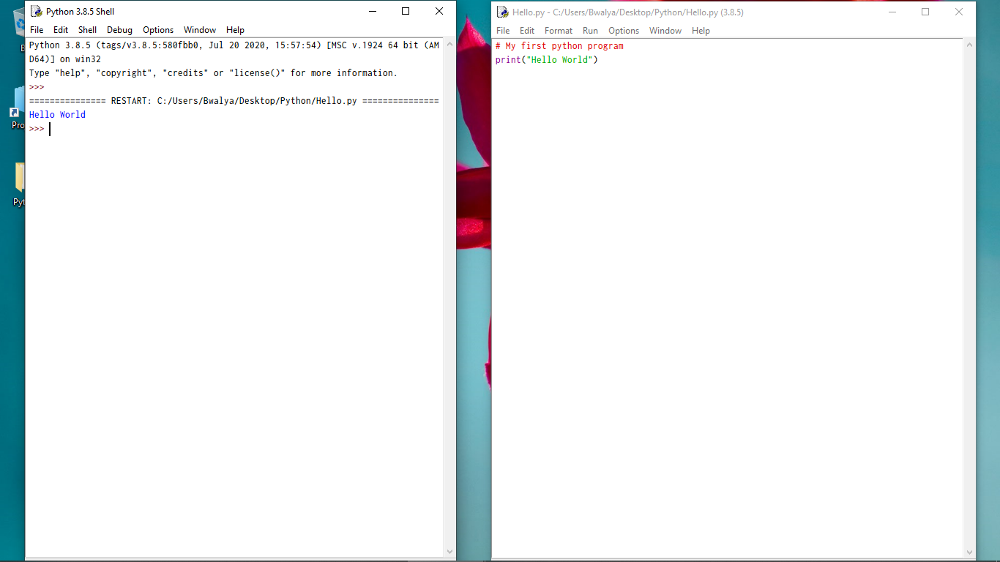

Python is a High-Level ,General purpose ,Interpreted programming language created by Guido van Rossum. It was released in 1991 and is named after the BBC Television Show 'Monty Python's Flying Circus'. The Python Software Foundaton, A non-profit organisation manages resources for Python development.
General purpose
Easy easy to rea and write
popular
Open the Terminal ,Command Prompt or powershell and run python --version to check if Python is installed( and what version) . If you get an Error or Version 2.x as the installed python, You'll need to install a new version of Python.
On windows you can install the latest version of Python from the Microsoft Store.
On Linux or MacOS you can install the latest version of Python from the Package Manager(Homebrew on MacOS, on Linux, Linux Distributions use different Package Managers).
Alternatively, go to python.org and download a python installer for your OS.
There are several ways you can run a python
Open the Pyhon Shell (IDLE).IDLE is a basic editor and interpreter
environment which comes with the installation of Python.
Ctrl/CMD + N or click on File and then New File to create a new
python file ...

# My first python program
print("Hello World")
Write the Sample Code on the Text Editor... 
Ctrl/CMD + S or click on File and then Save or Save As to save the python file. Choose the Python folder on the Desktop as the directory where to save the file. Name the file whatever you prefer with .py as the file extention, click save... 
click F5 or click Run and then Run Module to run the program
...

The Output will be shown on the Python Shell... 

Click the New File icon to create a new file ...

Name the file whatever you prefer with .py as the file extention, click Enter...
Write the Sample Code ,Ctrl/CMD + S to save changes...
Click Terminal , New Terminal to open a Terminal window ....
To run a python Program on the Command-Line, you'll need to invoke the
Python Interpreter on the program, for example :
python program_name.py then Enter to run the
program ...

Output

#comment: Comments in Python start with
the hash character (#) and extend to the end of the line. Comments are not
executed , they are mainly used to document the Code.
print(): The print function prints
anything passed into it to the screen.